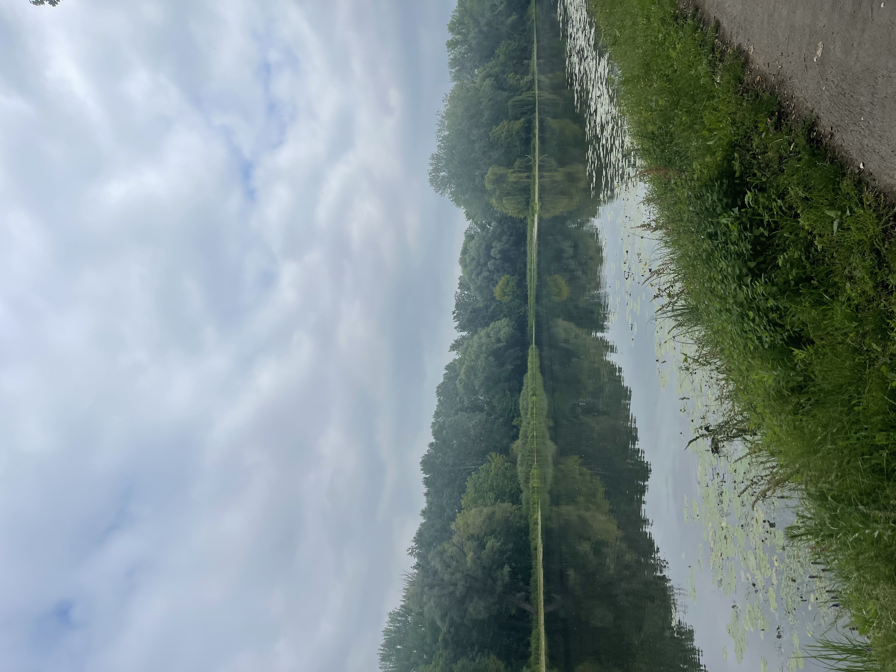
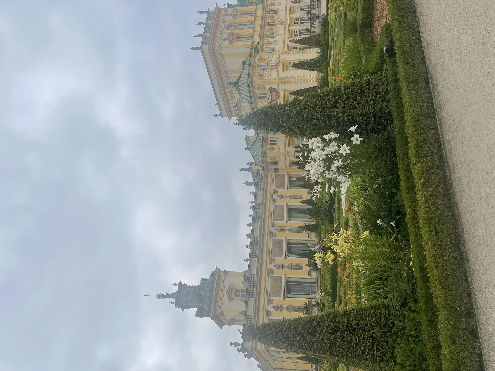
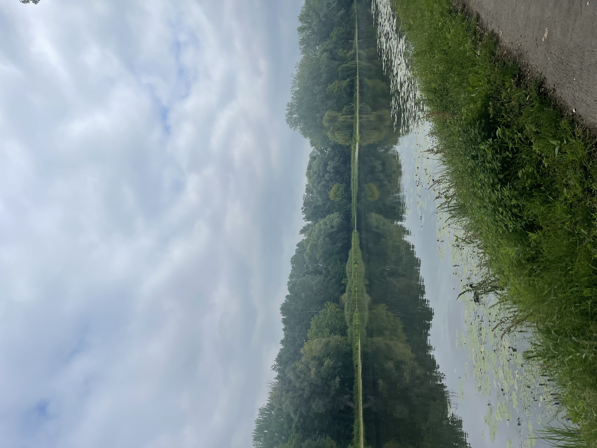
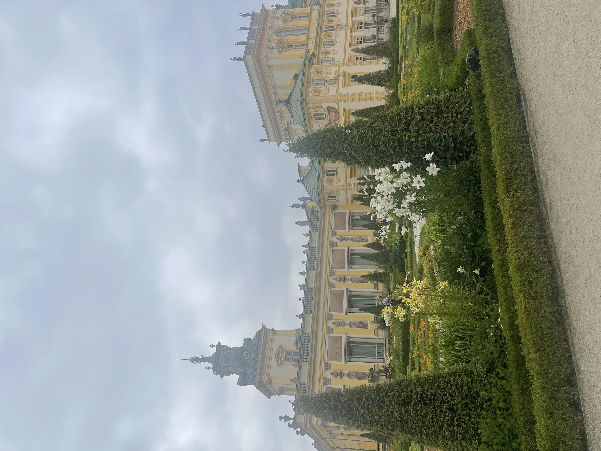
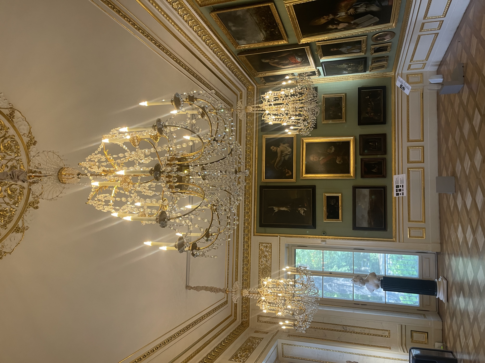

Posted July 22, 2025
Investigating some of the odd and interesting works on display in Wilanów Palace in Warsaw!
Recently, my wonderful friend Kirsten visited me from Copenhagen. One of the first places I took her to was Wilanów Palace, a royal palace originally built for the King of Poland in the late 1600s. I had never been there myself, and I was really excited to see this remarkable survivor of both World Wars, as it was far and away the oldest site I’d visited in the largely reconstructed city of Warsaw.
 





When Kirsten and I arrived, we were both shocked at how large the palace and its grounds were, and we ended up spending hours walking around the gardens, down the river, and through the museum. Along the way, I saw a few works that piqued my interest, whether because they simply aligned with my existing interests, stood out as unorthodox for their time period, or were just flat-out weird-looking. Here are a couple of those oddities!

As we walked around the gardens, these alien yet regal ladies appeared out of nowhere, sleek and modern silhouettes that stood out as technicolor among the whites and grays of the neighboring, classical white marble statues. Bumping into them almost felt confrontational, their appearance was so abrupt and incoherent with our surroundings. After that initial shock, however, the obvious nobility of their outline became clearer, and I understood these were princesses and queens exercising their right to promenade around royal grounds (even if they appear unearthly). As it turns out, these sculptures are the queens and princesses of Spanish artist Manolo Valdés:
“Picking up on the themes of feminine presence and power, Manolo Valdés’s queens and princesses have their roots deep in the currents of European history and art patronage.
In the settings of the Wilanów Palace and gardens, Valdés’s sculptures of Reina Mariana and the Infanta Margarita find a very fitting home. Valdés has a passion for the baroque and the trappings of royalty, and is most famous for his series of works based on Diego de Velázquez’s portraits of the queens and princesses of the Spanish Royal court.
Here in the Baroque gardens at Wilanów, we meet Mariana of Austria, the second wife of King Philip IV of Spain, and her daughter the Infanta Margarita Teresa. Philip IV was Velázquez’s greatest patron and one of the most important monarchs of the Spanish Golden Age, and both Reina Mariana and Infanta Margarita are depicted in Velázquez’s most celebrated painting, Las Meninas. Indeed, Las Meninas is one of the greatest masterpieces the Spanish Baroque period.
In both cases, the silhouettes of the Queen and Infanta are enhanced, while the finer features of their face and dress are simplified to emphasise the overwhelming sensation of this regal female figure taking up space. In focusing on volume over expressive detail, he creates evocations of feminine power and nobility that are formidable and very present.
The sleek yet durable aluminium of Reina Mariana has light reflecting qualities that shine and play with their surroundings; whilst Infanta Margarita is rendered in resin, a more painterly material built up layer by layer, bringing a smoothness and organic qualities of skin and fabric. Both material choices jolt Velázquez’s 17th century into dialogue with the industrial materials and techniques of our time.” (“Selected Writings – Isabel de Vasconcellos”)
These sculptures were only added to the gardens this year as part of author Isabel de Vasconcellos’ and head of the OmenaArt Foundation Natalia Bradbury’s curation of the public art sculpture park at Wilanów Palace. This sculpture park is part of OmenaArt Foundation’s larger initiative involving “the revitalization of historic buildings” (“Exhibitions & Projects – Isabel de Vasconcellos Contemporary Art Curator”) I’m glad to have visited Wilanów in time to see these otherworldly women brighten the palace grounds!
Walking through the museum, these portraits stood out to me because they emanated such strong personality and cleverness, both strong departures from the norm of stoic, noble, and straight-gazed featured in most other portraits in the museum. Their shared rebelliousness was too similar for them not to be created by the same artist, and I was curious what contributed to the decision to make one sister turn her face slightly down in superior but not unkind consideration, while the other sister looks knowingly upward into the distance.
The first is the Portrait of Izabala née Lubomirska, Wife of Ignacy Potocki (1755–1783), and the second is Portrait of Aleksandra née Lubomirska, Wife of Stanisław Potocki (1758–1831). Sisters Izabela and Aleksandra Lubormirska were participants in the Grand Tour, a travel circuit of notable European sites made by the European upper-class in the 18th century (“Glossary”). Along the way, they had their portraits done by painter Pompeo Batoni, who had garnered a reputation as a leading Grand Tour portraitist in Rome. In his proclivity for depicting allusions to myth is on full display in these sister works (“Pompeo Girolamo Batoni”): Izabela is portrayed as Polyhymnia (“Portrait of Izabela née Lubomirska”), the mythic Greek muse of sacred and hymnic poetry and eloquence, while Aleksandra is portrayed as Melpomene, the muse of song and tragedy (“Portrait of Aleksandra née Lubomirska”).
Based on this additional context, their unconventional gazes seem to be an extension of the characters they are embodying. Izabela/Polyhymnia looks to the side and down at her viewer because she has the ability to discern whether the words they speak are eloquent or true enough to be considered sacred, and thus has the power to identify the potential for cultural immortality in her spectators. As such, the viewer does not command her full attention, but they do activate her curiosity, a kind suggestion that every viewer has even a bit of this potential for eloquence. Aleksandra/Melpomene gazes up in seeming anticipation, as though she hears pleasant music and is awaiting a spectacular chorus. If Izabela’s/Polyhymnia’s gaze upon the viewer is an optimistic and complimentary comment on the potential of all spectators for eloquence, perhaps the decision to spare the viewer of Aleksandra’s/Melpomene’s gaze is another optimistic and benevolent message that they have been spared tragedy at the moment of their connection with this portrait. She kindly looks away from the viewer because there is no tragedy to be seen, leaving the viewer hopeful.
Babies in art from before the 18th century are usually scary, I shouldn’t be shocked by now. Even so, there were just so many terrifying babies in so many paintings at this museum. I don’t have any kind of critical analysis of this, I was truly just disturbed. These painting are all from the 1500s, and apparently, based on the painting on the far left, babies in the sixteenth century had ripped abs. Or maybe just Baby Jesus did, who’s to say.

This painting stood out to me because I couldn’t recall ever seeing such a costume as the red figure in the painting is wearing. I didn’t even realize that this masked figure is trying to wake up the sleeping youth in the painting by holding a lit match to the youth’s face. Can you imagine waking up to a man in a devil mask burning your face with an open flame? I can tell you right now, things would not end well for the prankster if I was in this scenario, I've got a mean throat punch. This painting, Scène de carnaval, was created by Belgian artist Nicolas Regnier in 1630. When I looked further into this artist, I discovered that, not only does Regnier have two other paintings where a jokester is being woken by a mischievous figure in red, but also one of them also involves the red prankster holding a live flame to the victim’s face! That feels like a really specific scenario to me, I wonder if Regnier just loved doing this specific prank to his friends, or if he had it done to himself a bunch of times and felt the need to take the same prank out on painted subjects. I do recommend checking out the other two paintings, I love seeing mischief and humor captured in fine art.
I laughed out loud at when I spotted this peculiar element of the ceiling mural in the Farfur Room of Wilanów. This room is notable for its walls, which are covered in beautiful blue and white tiles, and that was all I could find literature on when I tried to find an explanation for the baby leg. Apparently these tiles are crazier than the baby leg hanging from the ceiling. I’ve seen clever techniques that manipulate perspective to simulate three dimensions on a two-dimensional surface in pre-modern art, most recently in a ceiling mural at the National Austrian Library in Vienna. However, I have never seen an actually three-dimensional appendage added to a work to achieve this effect. I have so many unanswered questions about this leg. What is it made of? Is it porcelain or paper mâché? When was it made? Is an original element or was it added in the restoration process? Is there other instance of this technique in architecture and art?
I have not been able to find answers to these questions, but in the pursuit, I learned more about the painting technique of trompe l’oeil: “the representation of an object with such verisimilitude as to deceive the viewer concerning the material reality of the object” (“Tromp l’oeil”). This technique has endured since the Ancient Greeks, and I actually recently saw a famous example of trompe l’oeil, Trophy of the Hunt by William Harnett, at the Museum in the Palace on the Isle in Lazienki Park in Warsaw. Even so, for now, this mystery remains unsolved (read that in the voice of Ryan Bergara from Buzzfeed Unsolved.)
You can spot Harnett's painting in the middle left of this pucture I took at Royal Baths Park!
Several of the hallways we walked through had partially restored frescos and murals with excellent posters detailing the conservation efforts that took place. One of these posters had a “before” image to show what the frescoes looked like post-damage and pre-conservation, and that context made the vibrancy of our surroundings all the more impressive. The damage conservationists began reversing in 2023 came from the numerous renovations that Wilanów underwent under different owners, as well as disruptions from both World Wars (“Garden Galleries”).
When we entered a room filled with copies of the same portrait of who I incorrectly thought was a slightly scary nun, I was intrigued, though all of the informational posters were in Polish. As it turns out, the subject of these works is Queen Anna Jagiellon in her widowhood, painted by Martin Kober. I believe the copies surrounding the real portrait at the middle are meant as a point of comparison, so viewers can identify differentiating details that arose in recreations of the original, which is a pretty cool exercise.
I stopped in my tracks at these paintings. Aside from their vivid colors and charming personality, I could not remember ever having seen subjects painted with strained, puffed-up cheeks before. At first, I thought they were eating ravenously with food stored in their mouths, but the paintings’ names (Young Man with a Pipe, Blowing on Coals and Youth Lighting a Torch) clarified the subjects’ actions for me. According to the Wilanów website:
“Both paintings were the work of the Dutch painter Jan Lievens, who was inspired by, among others, Caravaggio and Rembrandt. These works from about 1625 reflect primarily the influence of the first of these two great masters, a style whose practitioners were known as Carravagisti. At first these two paintings were considered to be a paired set.
Today, however, we know that the first has the character of a genre scene; it documents the novelty of the fashion for smoking a pipe. In turn, the second image can be interpreted as an allegorical representation of the element of fire” (“Art Collecting in the Potocki Family”).
The two paintings definitely feel different tonally, as the first carries soft, pillowy blushes and organic colors that make it feel more dreamy, while the second is bright and pleasantly harsh, definitively an action scene. Even so, I still think of them a being related. Aside from the obvious connection of their puffed-up cheeks, they feel like representations of morning and night in their different textures and color contrasts, like two instances of the same day.
One of the last rooms we visited contained several paintings of the Wilanów estate and its rooms, many of which we had just been in. The one in the picture I took is the Queen’s Bedroom in the Wilanów Palace painted by Aleksander Gryglewski in 1874. It is a novel experience to feel as though you’ve entered a painting, I loved looking at this piece and thinking, “I’ve been in there!” It was a perfect end to our tour.
Wilanów Palace was beautiful to witness, and I loved finding answers to some of the questions I left my visit with!